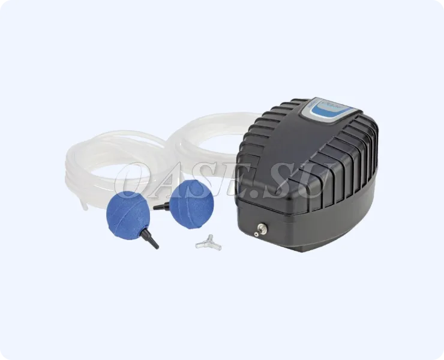

Вернуться в каталог

Аэраторы для пруда
Компрессор AQUAOXY CWS 500, 500 л/ч, для пруда до 5000л
Цена и наличие
- 1 шт.492,1 BYN / шт.В наличии
Данные на 23.11.2026.
Характеристики
- Бренд
- Oase
- Тип аэратора
- мембранный
- Для пруда
- До 5000 л
- Давление
- 0.2 Бар
- Производительность
- 500 л/час
- Размеры (Д х Ш х В) мм
- 185 x 140 x 110
- Номинальное напряжение
- 230 В / 50 Гц
- Энергопотребление Вт
- 8
- Длина кабеля питания м
- 2.0 (блок питания) + 3.0
- Объем перекачиваемого воздуха, л/час
- 500 л/час
- Вес кг
- 1,6
- Давление (бар/м)
- 0.2/2.0
- Механическое регулирование
- нет
- Шланг (кол-во/длина/ диаметр)
- 2шт х 5м/4.5мм
- Количество выходных соединений
- 2
- Кол-во воздушных камней
- 2
- Страна производитель, бренд
- Германия, Oase
Описание
AQUAOXY CWS 500 - аэратор для пруда.
АЭРАТОР БЕРЕГОВОЙ AQUAOXY CWS 500 Подходит для прудов объемом до 5 м³ Оптимальное обеспечение кислородом рыб и растений Безопасная 12В технология Бесшумная и экономичная работа Возможность установки практически в любом месте, благодаря достаточно длинному кабелю Простая и удобная эксплуатация Надежный двигатель и устойчивый высококачественный корпус Регулируемый уровень подачи воздуха